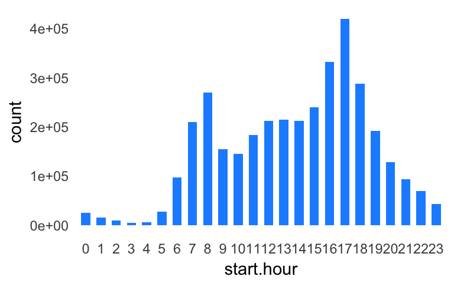
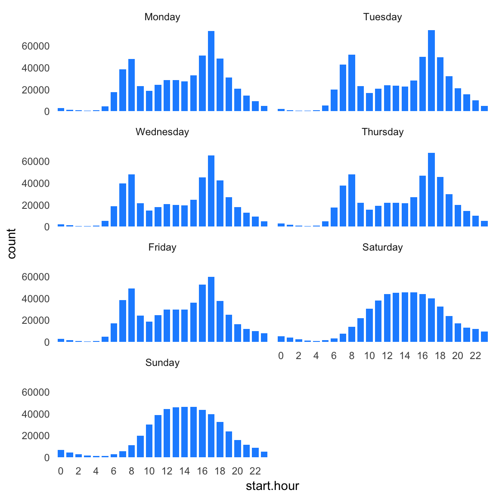
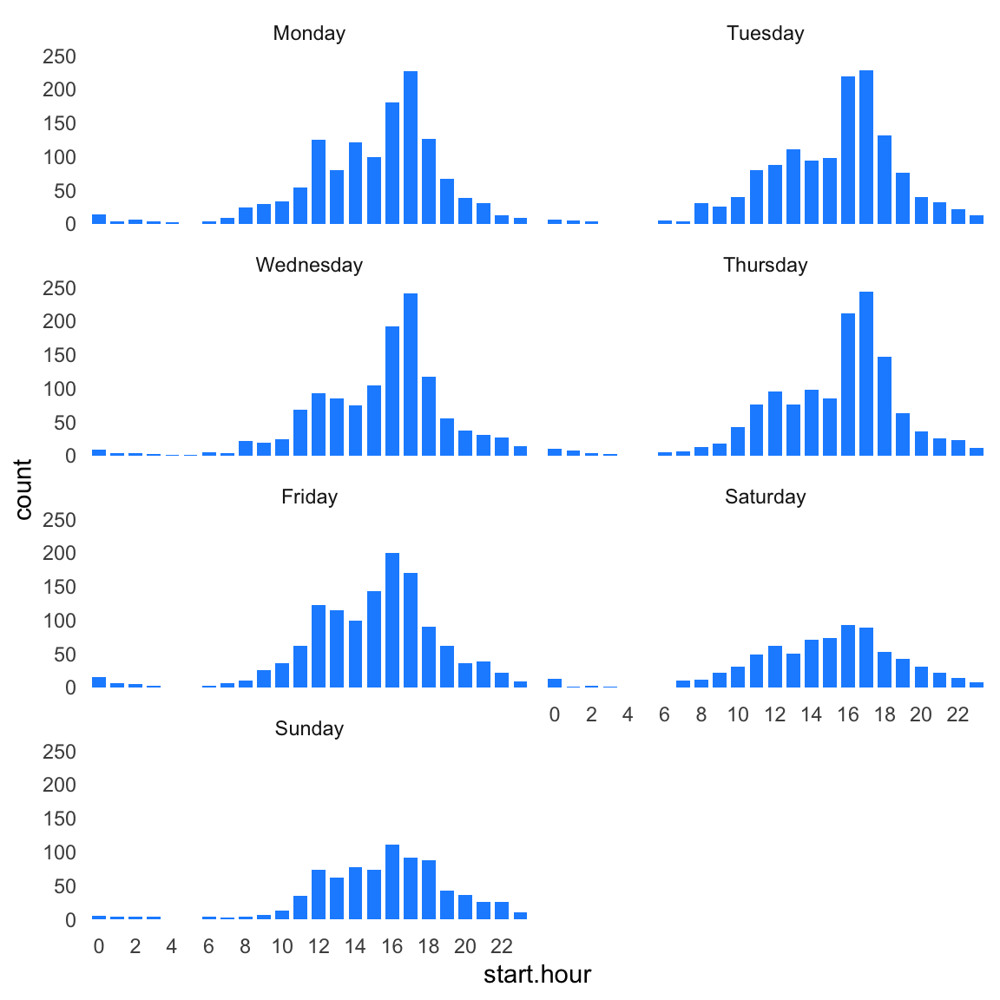

Last updated: 2020-01-06
Checks: 7 0
Knit directory: wflow-divvy/analysis/
This reproducible R Markdown analysis was created with workflowr (version 1.6.0). The Checks tab describes the reproducibility checks that were applied when the results were created. The Past versions tab lists the development history.
Great! Since the R Markdown file has been committed to the Git repository, you know the exact version of the code that produced these results.
Great job! The global environment was empty. Objects defined in the global environment can affect the analysis in your R Markdown file in unknown ways. For reproduciblity it’s best to always run the code in an empty environment.
The command set.seed(1) was run prior to running the code in the R Markdown file. Setting a seed ensures that any results that rely on randomness, e.g. subsampling or permutations, are reproducible.
Great job! Recording the operating system, R version, and package versions is critical for reproducibility.
Nice! There were no cached chunks for this analysis, so you can be confident that you successfully produced the results during this run.
Great job! Using relative paths to the files within your workflowr project makes it easier to run your code on other machines.
Great! You are using Git for version control. Tracking code development and connecting the code version to the results is critical for reproducibility. The version displayed above was the version of the Git repository at the time these results were generated.
Note that you need to be careful to ensure that all relevant files for the analysis have been committed to Git prior to generating the results (you can use wflow_publish or wflow_git_commit). workflowr only checks the R Markdown file, but you know if there are other scripts or data files that it depends on. Below is the status of the Git repository when the results were generated:
Ignored files:
Ignored: .DS_Store
Ignored: analysis/.DS_Store
Ignored: data/Divvy_Stations_2016_Q1Q2.csv
Ignored: data/Divvy_Stations_2016_Q3.csv
Ignored: data/Divvy_Stations_2016_Q4.csv
Ignored: data/Divvy_Trips_2016_04.csv
Ignored: data/Divvy_Trips_2016_05.csv
Ignored: data/Divvy_Trips_2016_06.csv
Ignored: data/Divvy_Trips_2016_Q1.csv
Ignored: data/Divvy_Trips_2016_Q3.csv
Ignored: data/Divvy_Trips_2016_Q4.csv
Ignored: data/README.txt
Ignored: data/data.tar.gz
Note that any generated files, e.g. HTML, png, CSS, etc., are not included in this status report because it is ok for generated content to have uncommitted changes.
These are the previous versions of the R Markdown and HTML files. If you’ve configured a remote Git repository (see ?wflow_git_remote), click on the hyperlinks in the table below to view them.
| File | Version | Author | Date | Message |
|---|---|---|---|---|
| html | 138d7ee | Peter Carbonetto | 2019-07-31 | Re-built the remaining pages with workflowr 1.4.0. |
| html | 5357a3b | Peter Carbonetto | 2019-04-10 | Build site. |
| Rmd | 61c85b2 | Peter Carbonetto | 2019-04-10 | wflow_publish(c(“seasonal-trends.Rmd”, “station-map.Rmd”, |
| html | 7658ee0 | Peter Carbonetto | 2019-04-10 | Re-built other analsyis pages with workflowr 1.2.0.9000. |
| html | 54fcf4e | Peter Carbonetto | 2018-04-14 | Re-built station-map, time-of-day-trends and seasonal-trends webpages |
| Rmd | de31b24 | Peter Carbonetto | 2018-04-14 | wflow_publish(c(“station-map.Rmd”, “seasonal-trends.Rmd”, |
| Rmd | f163fe4 | Peter Carbonetto | 2018-04-14 | Updates for new workflowr version, v0.11.0.9000. |
| html | f163fe4 | Peter Carbonetto | 2018-04-14 | Updates for new workflowr version, v0.11.0.9000. |
| html | 51163d7 | Peter Carbonetto | 2018-03-12 | Ran wflow_publish("*.Rmd") with version v0.11.0 of workflowr. |
| html | 440ea39 | Peter Carbonetto | 2018-03-09 | Removed the code_folding feature. |
| html | ab9176e | Peter Carbonetto | 2018-03-09 | Added code_hiding to the analysis R Markdown files. |
| html | 97cbef6 | Peter Carbonetto | 2018-01-23 | Adjusted footer and re-built all pages. |
| html | b32e833 | Peter Carbonetto | 2018-01-18 | Re-built all webpages using workflowr v0.1.0. |
| html | 0401587 | Peter Carbonetto | 2017-11-16 | Updated license.html, setup.html, station-map.html and |
| Rmd | 9463eb6 | Peter Carbonetto | 2017-11-16 | wflow_publish(c(“setup.Rmd”, “license.Rmd”, “time-of-day-trends.Rmd”, |
| html | 7979358 | Peter Carbonetto | 2017-08-02 | Re-built all webpages. |
| Rmd | 6b9ddf1 | Peter Carbonetto | 2017-08-02 | Added header with between-section spacing adjustment, and removed <br> tags from R Markdown files. |
| html | 13f03ed | Peter Carbonetto | 2017-07-31 | Re-built all webpages. |
| Rmd | c6e8686 | Peter Carbonetto | 2017-07-31 | wflow_publish(Sys.glob("*.Rmd")) |
| html | 6d2c5f4 | Peter Carbonetto | 2017-07-24 | Re-built website after fixing MathJax settings in footer. |
| Rmd | 3464086 | Peter Carbonetto | 2017-07-24 | wflow_publish(Sys.glob("*.Rmd")) |
| Rmd | 0976f2d | Peter Carbonetto | 2017-07-24 | Minor edit. |
| html | 10193ae | Peter Carbonetto | 2017-07-24 | Build site. |
| Rmd | bfb87df | Peter Carbonetto | 2017-07-24 | Added math formula example in time-of-day-trends.Rmd, and fixed |
| html | b1fe78a | Peter Carbonetto | 2017-07-24 | Reverted MathJax source. |
| html | af6b9be | Peter Carbonetto | 2017-07-24 | More testing of local MathJax. |
| html | cbf531a | Peter Carbonetto | 2017-07-24 | Testing local MathJax files. |
| html | abf5116 | Peter Carbonetto | 2017-07-24 | Build site. |
| Rmd | 795b214 | Peter Carbonetto | 2017-07-24 | Added math formulae to time-of-day trends .Rmd file. |
| html | e3afc60 | Peter Carbonetto | 2017-07-24 | Re-built all the R Markdown documents using workflowr 0.7.0, and with |
| html | 727b8d9 | Peter Carbonetto | 2017-07-13 | Re-built all the analysis files; wflow_publish(Sys.glob("*.Rmd")). |
| Rmd | 6d02ffc | Peter Carbonetto | 2017-07-13 | Made a dozen or so small adjustments to the .Rmd files. |
| html | 597355d | Peter Carbonetto | 2017-07-07 | Ran wflow_publish(c(index.Rmd,first-glance.Rmd,station-map.Rmd,time-of-day-trends.Rmd)). |
| Rmd | f7da4f6 | Peter Carbonetto | 2017-07-07 | Fixed a broken link, and made a bunch of small revisions to the notebooks. |
| html | 2431e84 | Peter Carbonetto | 2017-07-06 | wflow_publish(time-of-day-trends.Rmd) |
| Rmd | c8f7e10 | Peter Carbonetto | 2017-07-06 | Implemented first draft of seasonal trends notebook. |
| html | eb228f2 | Peter Carbonetto | 2017-07-06 | A bunch of small revisions to time-of-day trends notebook. |
| Rmd | 426d238 | Peter Carbonetto | 2017-07-06 | wflow_publish(“time-of-day-trends.Rmd”) |
| html | 9a36e9e | Peter Carbonetto | 2017-07-06 | Build site. |
| Rmd | e67cefb | Peter Carbonetto | 2017-07-06 | Added text to time-of-day-trends.Rmd and fixed up figures a bit. |
| html | 52f577a | Peter Carbonetto | 2017-07-06 | Build site. |
| Rmd | f86e267 | Peter Carbonetto | 2017-07-06 | wflow_publish(“time-of-day-trends.Rmd”) |
| Rmd | 9088b6a | Peter Carbonetto | 2017-07-06 | Build site. |
Here we use the Divvy trip data to examine biking trends over the course of a typical day in Chicago.
I begin by loading a few packages, as well as some additional functions I wrote for this project.
library(data.table)
library(ggplot2)
source("../code/functions.R")Following my earlier steps, I use function read.divvy.data to read the trip and station data from the CSV files.
divvy <- read.divvy.data()
# Reading station data from ../data/Divvy_Stations_2016_Q4.csv.
# Reading trip data from ../data/Divvy_Trips_2016_Q1.csv.
# Reading trip data from ../data/Divvy_Trips_2016_04.csv.
# Reading trip data from ../data/Divvy_Trips_2016_05.csv.
# Reading trip data from ../data/Divvy_Trips_2016_06.csv.
# Reading trip data from ../data/Divvy_Trips_2016_Q3.csv.
# Reading trip data from ../data/Divvy_Trips_2016_Q4.csv.
# Preparing Divvy data for analysis in R.
# Converting dates and times.To make it easier to compile statistics by time of day, I convert the “start hour” column to a factor.
divvy$trips <- transform(divvy$trips,start.hour = factor(start.hour,0:23))Now that start.hour is a factor, it is easy to create a bar chart showing the total number of departures at each hour. Unsurprisingly, we see little biking activity at night. Further, the two peaks (“modes”) in the bar chart nicely recapitulate the morning and afternoon rush hours.
ggplot(divvy$trips,aes(start.hour)) +
geom_bar(fill = "dodgerblue",width = 0.6) +
theme_minimal() +
theme(panel.grid.major = element_blank(),
panel.grid.minor = element_blank())
However, this bar chart is a bit muddled because it is counting trips during the week and on the weekends. Consider that the bin count \(x[h]\) for hour \(h\) in the histogram above is a sum of the counts for each day of the week:
\[ \begin{align} x[h] & = \sum_{i\;\in\;\mathsf{DaysOfTheWeek}} x_i[h] \\ & = x_{\mathsf{Mon}}[h] + x_{\mathsf{Tue}}[h] + x_{\mathsf{Wed}}[h] + x_{\mathsf{Thu}}[h] + x_{\mathsf{Fri}}[h] + x_{\mathsf{Sat}}[h] + x_{\mathsf{Sun}}[h] \end{align} \]
Note: The math above is embedded in the webpage using MathJax. See here for an excellent reference on MathJax.
Once we plot the counts separately for each the day of the week, the rush-hour trends become more obvious. (Also notice that the rush-hour weeks disappear on Saturday and Sunday.)
ggplot(divvy$trips,aes(start.hour)) +
geom_bar(fill = "dodgerblue",width = 0.75) +
facet_wrap(~start.day,ncol = 2) +
scale_x_discrete(breaks = seq(0,24,2)) +
theme_minimal() +
theme(panel.grid.major = element_blank(),
panel.grid.minor = element_blank())
The commuting trends are different at the University of Chicago Divvy station—there isn’t much of a morning rush hour. This may be because students and staff don’t regularly use the Divvy bikes for commuting.
ggplot(subset(divvy$trips,from_station_name == "University Ave & 57th St"),
aes(start.hour)) +
geom_bar(fill = "dodgerblue",width = 0.75) +
facet_wrap(~start.day,ncol = 2) +
scale_x_discrete(breaks = seq(0,24,2)) +
theme_minimal() +
theme(panel.grid.major = element_blank(),
panel.grid.minor = element_blank())
This is the version of R and the packages that were used to generate these results.
sessionInfo()
# R version 3.6.2 (2019-12-12)
# Platform: x86_64-apple-darwin15.6.0 (64-bit)
# Running under: macOS Catalina 10.15.2
#
# Matrix products: default
# BLAS: /Library/Frameworks/R.framework/Versions/3.6/Resources/lib/libRblas.0.dylib
# LAPACK: /Library/Frameworks/R.framework/Versions/3.6/Resources/lib/libRlapack.dylib
#
# locale:
# [1] en_US.UTF-8/en_US.UTF-8/en_US.UTF-8/C/en_US.UTF-8/en_US.UTF-8
#
# attached base packages:
# [1] stats graphics grDevices utils datasets methods base
#
# other attached packages:
# [1] ggplot2_3.2.1 data.table_1.12.8
#
# loaded via a namespace (and not attached):
# [1] Rcpp_1.0.3 compiler_3.6.2 pillar_1.4.3 later_1.0.0
# [5] git2r_0.26.1 workflowr_1.6.0 tools_3.6.2 digest_0.6.23
# [9] evaluate_0.14 lifecycle_0.1.0 tibble_2.1.3 gtable_0.3.0
# [13] pkgconfig_2.0.3 rlang_0.4.2 yaml_2.2.0 xfun_0.11
# [17] withr_2.1.2 stringr_1.4.0 dplyr_0.8.3 knitr_1.26
# [21] fs_1.3.1 rprojroot_1.3-2 grid_3.6.2 tidyselect_0.2.5
# [25] glue_1.3.1 R6_2.4.1 rmarkdown_2.0 farver_2.0.1
# [29] purrr_0.3.3 magrittr_1.5 whisker_0.4 backports_1.1.5
# [33] scales_1.1.0 promises_1.1.0 htmltools_0.4.0 assertthat_0.2.1
# [37] colorspace_1.4-1 httpuv_1.5.2 labeling_0.3 stringi_1.4.3
# [41] lazyeval_0.2.2 munsell_0.5.0 crayon_1.3.4